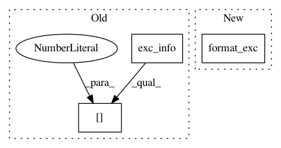

8e2528c312791c2c56c8bca365669e06ab698a88,recipes/Python/576534_Dump_Oracle_db_schema_to_text/recipe-576534.py,,add_ver_info,#Any#Any#Any#,812
Before Change
try:
show_qry(sel, sel, fout=f)
except:
ex = sys.exc_info()
serr = "\nSQL: %s\nException: %s: %s\n" % (sel, ex[0], ex[1])
print_err(serr)
break
output_line("<<< ver info")
After Change
try:
show_qry(sel, sel, fout=f)
except:
ex_info = traceback.format_exc()
serr = "\nSQL: %s\nException: %s\n" % (sel, ex_info)
print_err(serr)
break
show_qry("DB features used", FEATURE_USAGE_SQL, fout=f)
In pattern: SUPERPATTERN
Frequency: 4
Non-data size: 3
Instances
Project Name: ActiveState/code
Commit Name: 8e2528c312791c2c56c8bca365669e06ab698a88
Time: 2017-11-28
Author: mn@mn.heuthesd
File Name: recipes/Python/576534_Dump_Oracle_db_schema_to_text/recipe-576534.py
Class Name:
Method Name: add_ver_info
Project Name: automl/auto-sklearn
Commit Name: 01bc33b4530a34d5d5908a758dba780e03f9bf91
Time: 2016-03-22
Author: feurerm@informatik.uni-freiburg.de
File Name: test/test_pipeline/test_classification.py
Class Name: SimpleClassificationPipelineTest
Method Name: test_configurations_categorical_data
Project Name: automl/auto-sklearn
Commit Name: 01bc33b4530a34d5d5908a758dba780e03f9bf91
Time: 2016-03-22
Author: feurerm@informatik.uni-freiburg.de
File Name: test/test_pipeline/test_classification.py
Class Name: SimpleClassificationPipelineTest
Method Name: test_configurations_sparse
Project Name: ActiveState/code
Commit Name: 8e2528c312791c2c56c8bca365669e06ab698a88
Time: 2017-11-28
Author: mn@mn.heuthesd
File Name: recipes/Python/576534_Dump_Oracle_db_schema_to_text/recipe-576534.py
Class Name:
Method Name: init_db_conn